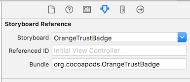

OrangeTrustBadge Reference
OrangeTrustBadge Reference
Orange trust badge iOS Reference
With the Orange trust badge, aka Badge de confiance
, give transparent informations and user control on personal data and help users to identify if your application has any sensitive features.
Features
Orange trust badge displays how are handled the following data :
- Identity of the User
- Location
- Photos
- Contacts
- Usage data
- Calendar
- SMS
- Microphone
- Phone
- Body sensors
- Social Sharing
- In-app purchase
- Advertising
It also displays the following informations :
- Application’s rating
- Data usage general description
- Help
- Privacy policy
It also :
- Works on iPhone and iPad using Autolayout (iPad Multitasking supported)
- Localized in 2 languages (English,French)
- Written in Swift 2.0 but works in Objective-C or Swift based Projects
- API hooks
- UI Customization
Requirements
- iOS 8.0+
- Xcode 6.4+
- CocoaPods 0.39.0+
Bug tracker
- If you find any bugs, please submit a bug report through Github and/or a pull request.
Example project
An example of integration is provided in OrangeTrustBadgeDemo project.
Installation
Embedded frameworks require a minimum deployment target of iOS 8
CocoaPods
CocoaPods is a dependency manager for Cocoa projects. You can install it with the following command:
$ gem install cocoapods
CocoaPods 0.39.0+ is required to build OrangeTrustBadge.
To integrate OrangeTrustBadge into your Xcode project using CocoaPods, specify it in your Podfile:
platform :ios, '8.0'
use_frameworks!
source 'https://github.com/Orange-OpenSource/orange-trust-badge-ios.git'
source 'https://github.com/CocoaPods/Specs.git'
pod 'OrangeTrustBadge'
Then, run the following command:
$ pod install
Manually
If you prefer not to use either of the aforementioned dependency managers, you can integrate OrangeTrustBadge into your project manually.
Embedded Framework
- Open up Terminal,
cdinto your top-level project directory, and run the following commandif
your project is not initialized as a git repository:
$ git init
- Add OrangeTrustBadge as a git submodule by running the following command:
$ git submodule add https://github.com/Orange-OpenSource/orange-trust-badge-ios.git
Open the new
OrangeTrustBadgefolder, and drag theOrangeTrustBadge.xcodeprojinto the Project Navigator of your application’s Xcode project.It should appear nested underneath your application’s blue project icon. Whether it is above or below all the other Xcode groups does not matter.
Select the
OrangeTrustBadge.xcodeprojin the Project Navigator and verify the deployment target matches that of your application target.Next, select your application project in the Project Navigator (blue project icon) to navigate to the target configuration window and select the application target under the
Targets
heading in the sidebar.In the tab bar at the top of that window, open the
General
panel.Click on the
+button under theEmbedded Binaries
section.You will see two different
OrangeTrustBadge.xcodeprojfolders each with two different versions of theOrangeTrustBadge.frameworknested inside aProductsfolder.It does not matter which
Productsfolder you choose from, but it does matter whether you choose the top or bottomOrangeTrustBadge.framework.Select the top
OrangeTrustBadge.frameworkfor iOS.And that’s it!
The
OrangeTrustBadge.frameworkis automagically added as a target dependency, linked framework and embedded framework in a copy files build phase which is all you need to build on the simulator and a device.
Usage
Initialization of the SDK
In swift
import OrangeTrustBadge
func application(application: UIApplication, didFinishLaunchingWithOptions launchOptions: [NSObject: AnyObject]?) -> Bool {
TrustBadgeManager.with(TrustBadgeConfig())
return true
}
or in Objective-C
#import "OrangeTrustBadge-Swift.h"
- (BOOL)application:(UIApplication *)application didFinishLaunchingWithOptions:(NSDictionary *)launchOptions {
[TrustBadgeManager with:[[TrustBadgeConfig alloc] init]];
return YES;
}
Add OrangeTrustBadge UI in your storyboard
Using code (available on iOS8 and later)
- create an IBAction connected to one of your interface element (e.g a button, a cell etc…).
- Instanciate OrangeTrustBadge storyboard with the following lines :
import OrangeTrustBadge
@IBAction func onButtonClicked(){
let storyboard = UIStoryboard(name: "OrangeTrustBadge", bundle: NSBundle(forClass: TrustBadgeManager.self))
if let viewController = storyboard.instantiateInitialViewController() {
self.navigationController?.presentViewController(viewController, animated: true, completion: nil)
}
}
That’s it !
Using Storyboard References (available on iOS9 and later)
- Open your storyboard file and add a Storyboard reference object in it
- Click on newly created Storyboard Reference and go into Attribute inspector on the right panel
- In Storyboard field, select
OrangeTrustBadge - In Bundle field, type
org.cocoapods.OrangeTrustBadge - Finally, create a segue from the appropriate button or cell in your app and this Storyboard Reference (Some segue types might be unavailable since this component is using UISplitViewController - Try
Present Modally
to start)

That’s it !
Add localization support
In order to localize properly the UI, OrangeTrustBadge is using standard iOS mechanisms. Concretly the SDK will take the current language setup on user’s phone unless your app support this localization. English will be taken by Default.
To add a localization support, go to Project Level and add appropriate localization in Info
Tab.
You can override every visible text using your own Localizable.strings file. To know which key you need to override, please see SDK ’s Localization file.
Customization
OrangeTrustBadge can be customized in various ways
Main / Other Elements View
In this View are displayed two pre-defined sections showing TrustBadge Elements and their underlying status. Although it is required to have at least one item in the first section, you can fully customize the different sections using PreDefined or Custom Elements.
- A PreDefinedElement that is automagically setup for common cases
In swift
let advertisingElement = PreDefinedElement(type: .Advertising)
advertisingElement.statusClosure = {() in return true}
config.mainElements.append(advertisingElement)
- A CustomElement on which you have full control of displayed informations
In swift
let myCustomElement = CustomElement(nameKey: "custom-element-name-key", descriptionKey: "custom-element-description-key", statusEnabledIconName: "custom-element-enabled-icon", statusDisabledIconName: "custom-element-disabled-icon")
myCustomElement.isConfigurable = false
myCustomElement.statusClosure = {() in return true}
config.otherElements.append(myCustomElement)
Terms and Conditions View
In this section you will find Standardized Terms ans conditions that can be replaced / updated according to your needs through Localization. If you want to add a section in this View, you just have to add a new Term instance :
In swift
let customTerm = Term(type: .Custom, titleKey: "term-custom-title", contentKey: "term-custom-content")
config.terms.append(customTerm)
You can even display Dailymotion videos explaining your policies using .Video TermType. Please fill in contentKey
with the video ID from Dailymotion.
CSS and HTLM tokens
TrustBadgeElements and Terms descriptions may contains HTML code, with the following restriction :
- UTF-8 encoded
- no external resource (image, css, …) can be used
When HTML is possible, there are 2 cases
- Full HTML : you must provide a HTML code WITH
<html>and<body>tags - Partial HTML : you must provide a HTML code WITHOUT
<html>and<body>tags
Descriptions should include a stylesheet named $$cssStylesheet$$ and format the text using h1, h2, p and <span class="p">.
You can provide to OrangeTrustBadge your own CSS file by placing a file named style.css in your application bundle.
In HTML
<!DOCTYPE html>
<html>
<head>
<meta content="text/html; charset=utf-8" http-equiv="content-type">
<style type="text/css">$$cssStylesheet$$</style>
</meta>
</head>
<body>
<h1>Aide</h1>
<p>Si besoin, votre application met à disposition cette adresse mail pour répondre à vos questions :</p>
<span class="p">
<!-- span.p is used for last paragraph, otherwise layount is broken-->
foo.bar@example.com
</span>
</body>
</html>
Some tokens will be available over time, but for the moment you can only use $$applicationName$$, configurable by using the appName field of TrustBadgeConfig (Default : CFBundleDisplayName or CFBundleName of host app)
App Transport Security
OrangeTrustBadge is not requesting anything on the network unless you include videos in the Terms section. Dailymotion SDK doesn’t support ATS so far so if you are in this case, please add dailymotion.com as an exception in your ATS setup.
Dependencies
- Dailymotion SDK : Copyright © 2012 Dailymotion (http://www.dailymotion.com) under MIT License (https://github.com/dailymotion/dailymotion-player-sdk-ios/blob/master/LICENSE)
Credits
OrangeTrustBadge was made with love by Orange
Security Disclosure
If you believe you have identified a security vulnerability with OrangeTrustBadge, you should report it as soon as possible on the bug tracker.
License
OrangeTrustBadge Copyright © 2016 Orange
Licensed under the Apache License, Version 2.0 (the License
);
you may not use this file except in compliance with the License.
You may obtain a copy of the License at
http://www.apache.org/licenses/LICENSE-2.0
Unless required by applicable law or agreed to in writing, software
distributed under the License is distributed on an AS IS
BASIS,
WITHOUT WARRANTIES OR CONDITIONS OF ANY KIND, either express or implied.
See the License for the specific language governing permissions and
limitations under the License.